ديناميات وقابلية السكن في نظامي TESS المحيطين بثنائي نجمي TOI-1338 وTIC-172900988
الملخص
اكتشف TESS مؤخرا كوكبين محيطين بثنائي نجمي. والهدف الرئيس من هذا العمل هو استكشاف ما إذا كان ممكنا، إلى جانب الكوكب المكتشف المحيط بالثنائي، وجود كوكب شبيه بالأرض داخل المنطقة القابلة للسكن في النظام. نجري محاكاة عددية على كامل مدى المنطقتين القابلتين للسكن لمعرفة ما إذا كان يمكن لكوكب ذي كتلة أرضية أن يوجد هناك. ونجد أن كلا النظامين يبدو قادرا على استضافة كوكب إضافي في منطقته القابلة للسكن. ونبني مناطق قابلة للسكن مستندة إلى الديناميات، ونجد أن نسبة كبيرة من المنطقة القابلة للسكن يمكن أن تكون ملائمة لكوكب كي يحتفظ بالماء السائل على سطحه، أيا كان تطوره المداري. وعلاوة على ذلك، نبحث إمكانية كشف كوكب شبيه بالأرض في المنطقة القابلة للسكن للنظامين. ونجد أنه في كلا النظامين، لو وجد مثل هذا الكوكب، فإن إشارات السرعة الشعاعية والقياس الفلكي ستكون صغيرة إلى حد يجعل كشفها بأدواتنا الحالية صعبا. كما نقدم بعض النقاش حول التطور الديناميكي للكوكب الموجود.
keywords:
الثنائيات: عامة، الكواكب والأقمار: التطور الديناميكي والاستقرار، الكواكب والأقمار: الكشف، الكواكب والأقمار: الكواكب الأرضية، الطرائق: عددية1 مقدمة
يستمر عدد الكواكب الخارجية المكتشفة في الازدياد طوال الوقت. ويعثر على كثير من هذه الكواكب في ثنائيات نجمية أو في أنظمة ذات تعددية نجمية أعلى. ويتمثل فهمنا الحالي في أن عددا مهما من النجوم يوجد في أنظمة نجمية ثنائية أو متعددة (انظر مثلا Bonavita & Desidera, 2020, والمراجع الواردة هناك). وهناك عدة أسئلة معلقة تتعلق بتشكل الكواكب وتطورها في الثنائيات (Marzari & Thebault, 2019). وسيقدم ازدياد عدد الكواكب المكتشفة في الثنائيات معلومات قيمة للإجابة عن كثير من هذه الأسئلة.
بعد دخوله الخدمة قبل بضع سنوات، أثبت القمر الصناعي لمسح الكواكب الخارجية العابرة (TESS) أنه مورد ثمين في سعينا إلى العثور على كواكب خارج نظامنا الشمسي. وحتى الآن، كانت معظم اكتشافاتنا في السنوات الأخيرة للكواكب المحيطة بثنائي نجمي قد تحققت بوساطة بعثة Kepler (Borucki et al., 2010; Koch et al., 2010)، وكان أحدثها Kepler-1661b في 2020 (Socia et al., 2020). وفي العام الماضي أُعلن عن TOI-1338b، وهو أول كوكب محيط بثنائي نجمي يكتشفه TESS (Kostov et al., 2020). وتلا ذلك اكتشاف آخر (Kostov et al., 2021)، هو TIC-172900988، ليصبح عدد الكواكب المحيطة بثنائي نجمي التي عثر عليها TESS اثنين.
لم تعد الكواكب بحجم الأرض حقيقة رصدية منذ مدة فحسب، بل إن بعضا منها يوجد في ما يسمى المنطقة القابلة للسكن حول النجم المضيف (مثلا Gillon et al., 2016; Rodriguez et al., 2020; Gilbert et al., 2020). والمنطقة القابلة للسكن هي الإقليم المحيط بنجم حيث يستطيع كوكب أرضي على مدار دائري الاحتفاظ بالماء السائل على سطحه (Kasting et al., 1993). في هذا العمل نستكشف إمكانية وجود كوكب شبيه بالأرض في المنطقة القابلة للسكن للنظامين المحيطين بثنائي نجمي اللذين اكتشفهما TESS مؤخرا. وعن طريق المحاكاة العددية، نتحقق مما إذا كان كوكب بكتلة أرضية في المنطقة القابلة للسكن للنظامين يستطيع أن ينجو من الاضطرابات الجذبية الناشئة عن الثنائية النجمية والكوكب الموجود المحيط بها على مدى زمني كاف. ونستخدم أيضا مفهوم المناطق القابلة للسكن المستندة إلى الديناميات (DIHZs فيما يلي) (e.g. Georgakarakos et al., 2021) بغية تقييم قدرة ذلك الكوكب المحتملة على دعم الماء السائل على سطحه. وأخيرا، نحاول وضع بعض القيود على شدة إشارة الكشف التي قد يولدها مثل هذا الكوكب.
تأتي بنية الورقة على النحو الآتي: في القسم 2 نحلل النظامين من منظور التطور الديناميكي. وفي القسم 3 نبحث استقرار المنطقة القابلة للسكن في النظامين، بينما نستخدم في القسم 4 مناطق DIHZs لاستخلاص مزيد من المعلومات عن المنطقة القابلة للسكن. وفي القسم 5 نناقش قابلية كشف الكواكب الشبيهة بالأرض في المنطقة القابلة للسكن في النظامين، بينما نقدم في القسم 6 ملخصا لنتائجنا وبعض النقاش.
2 ديناميات كواكب TESS المحيطة بثنائي نجمي
2.1 TOI-1338b
TOI-1338b كوكب ذو كتلة يدور حول ثنائية غير متساوية الكتلة ذات شذوذ مداري منخفض نسبيا. ويدور الكوكب حول الثنائية في 95 يوم مع شذوذ أقل من 0.1. ويبدو أن الميل المداري المتبادل للنظام هو (Kostov et al., 2020). يمكن العثور على جميع العناصر المدارية والمعلمات الفيزيائية للنظام في الجدول 2 في الملحق.
وفقا لـ Holman & Wiegert (1999)، فإن نصف المحور الأكبر الحرج لهذا النظام قبل أن يصبح غير مستقر هو 0.370 وحدة فلكية. أما نصف المحور الأكبر للكوكب TOI-1338b فهو . لذلك يبدو النظام مستقرا إلى حد معقول. وتدعم ذلك أيضا نتائج Georgakarakos (2013)، مع افتراض مدارات دائرية. ونسبة الفترات في النظام هي 6.51، مما يعني أن من المرجح أن نظامنا يقع في منطقة مستقرة من فضاء المعلمات بين رنينات غير مستقرة، على نحو مشابه لما يحدث في عدد من كواكب Kepler المحيطة بثنائي نجمي (e.g. see Chavez et al., 2015; Popova & Shevchenko, 2016).
في Georgakarakos & Eggl (2015) طورنا إطارا تحليليا لوصف حركة الكواكب المحيطة بثنائي نجمي والقريبة من الاستواء المشترك، على المقاييس الزمنية المدارية وكذلك طويلة الأمد. وقد غطت الطريقة جميع قيم شذوذ الثنائية، وتضمنت أيضا تصحيحا لما بعد نيوتن لمدار الثنائية. وكان النموذج يصبح أقل موثوقية مع اكتساب الكوكب بعض الشذوذ (.).
وفقا للنموذج التحليلي، يتوقع أن يسبب الكوكب تقدما في حضيض الثنائية بمعدل
| (1) |
حيث إن هو ثابت الجذب العام، و و هما كتلتا النجمين، و هي كتلة الكوكب، و يدل على نصف المحور الأكبر بينما يدل على الشذوذ. وتشير الفهارس و إلى الثنائية والكوكب على الترتيب. إضافة إلى ذلك، يتقدم حضيض الثنائية بفعل النسبية العامة بمعدل (إلى الرتبة القائدة):
| (2) |
حيث إن هي سرعة الضوء في الفراغ. ومن ثم، فإن معدل تقدم حضيض الثنائية هو . وبالنسبة إلى ثنائية TOI-1338، تساوي الكمية أعلاه 0.0005404 درجة خلال فترة ثنائية واحدة؛ 0.0004272 درجة من النظرية الكلاسيكية و0.0001132 درجة من النسبية. وتتفق هذه الأعداد جيدا مع (Kostov et al., 2020)، حيث يعطي أفضل نموذج ملائم إجمالا 0.0005715 درجة في كل دورة. وتشمل هذه القيمة مساهمة المد والجزر في تقدم حجة الحضيض، وهي أصغر بمرتبتين تقريبا من المساهمتين الأخريين.
يعطى الشذوذ القسري للكوكب المحيط بالثنائية بالعلاقة
| (3) |
مع
| (4) |
و
| (5) |
بالنسبة إلى TOI-1338b، تعطي المعادلة (3) القيمة . وبالنسبة إلى كوكب محيط بثنائي نجمي على مدار دائري ابتدائيا، سيكون الشذوذ طويل الأمد الأقصى . وإذا أخذنا في الحسبان المساهمة من المقاييس الزمنية الأقصر، فإن الشذوذ الأقصى للكوكب TOI-1338b المتوقع من النموذج التحليلي هو 0.098، وهو متسق مع الشذوذ 0.0928 الذي قدمه Kostov et al. (2020). وبطبيعة الحال، إذا كان الكوكب في البداية على مدار ذي شذوذ طفيف، فسيؤثر ذلك أيضا في القيمة القصوى للشذوذ. أما الفترة طويلة الأمد لتذبذب الشذوذ وفترة تقدم طول الحضيض فتبلغ نحو 23.5 سنة، وهو ما يتفق على نحو ممتاز مع ما وجده Kostov et al. (2020).
2.2 TIC-172900988
TIC-172900988b (Kostov et al., 2021) هو أحدث كوكب محيط بثنائي نجمي اكتشفه TESS. وعلى الرغم من أن المعلمات المدارية وكتلة الكوكب لا يمكن تحديدها تحديدا وحيدا (إذ وُجدت للنظام ستة حلول ذات أرجحية شبه متساوية - انظر الجدول 3 في الملحق)، فإن كتلة الكوكب تقع ضمن المجال . إنه كوكب كبير نسبيا، كتلته لا تقل عن ضعف كتلة المشتري، وله فترة مدارية تقارب 200 يوم على مدار شبه دائري. وتتكون الثنائية نفسها من نجمين ذوي كتلتين متشابهتين على مدار متوسط الشذوذ وفترته المدارية تقل قليلا عن 20 يوم. وأعلى ميل متبادل بين الحلول المدارية المقترحة هو . ويشبه النظام Kepler-34 (Welsh et al., 2012) في هذا الجانب. كما أن نسب الفترات في النظامين متشابهة: 10.39 بالنسبة إلى Kepler 34، بينما بالنسبة إلى TIC-172900988، ووفقا للحل المستخدم، تتراوح نسبة الفترات من 9.60 إلى 10.38.
يبدو النظام مستقرا إلى حد معقول. ويعطي المعيار التجريبي لـ Holman & Wiegert (1999) القيمة 0.675 وحدة فلكية لنصف المحور الأكبر الحرج. وأصغر نصف محور أكبر كوكبي بين جميع الحلول هو 0.86733 وحدة فلكية. وبناء على البيانات الرصدية، يعطي Kostov et al. (2021) دورة مقدارها للحركة الأبسيدية للثنائية. وتسهم النسبية العامة بمقدار دورة، بينما تمثل دورة المساهمة المتوقعة بسبب الانتفاخات المدية. ومن ثم يستنتجون أن بقية التقدم ناتجة عن الكوكب المحيط بالثنائية. وتدعم هذه الفرضية بوضوح الصيغة التحليلية لـ Georgakarakos & Eggl (2015). وعند تقييم المعادلة (2) لأي من الحلول الستة، نحصل على قيمة قدرها دورة كما ورد في Kostov et al. (2021). ووفقا للمعادلة (2)، تتنبأ النظرية التحليلية بقيمة بين و، تبعا للحل المستخدم، لتقدم خط الأوج والحضيض للثنائية بفعل وجود كوكب. ويبدو أن هذا يدعم وجود جسم كوكبي في النظام.
الشذوذ القسري للنظام كما تعطيه المعادلة (3) هو . وهذا الشذوذ القسري المنخفض متوقع، إذ على الرغم من شذوذ الثنائية المتوسط، فإن الفرق في كتلتي النجمين يبلغ نحو ، ومن ثم يصبح صغيرا في (3). لذلك لا نتوقع أن يظهر الكوكب تغيرات كبيرة في عناصره المدارية على المقاييس الزمنية طويلة الأمد. وإذا ضممنا التأثيرات الجذبية على المقاييس الزمنية الأقصر، فإن النموذج التحليلي يعطي قيمة 0.0510-0.0580 للشذوذ الكوكبي الأقصى عندما يكون الكوكب على مدار دائري ابتدائيا. ويتسق نطاق القيم هذا مع الشذوذ الكوكبي في حلين من الحلول المقترحة كما يظهر في الجدول (3). أما بقية الحلول فلها أعلى، وقد يمكن مطابقتها إذا افترضنا شذوذا ابتدائيا غير صفري.
3 استقرار المنطقة القابلة للسكن
في هذا القسم نبحث الاستقرار الديناميكي للمنطقة القابلة للسكن في نظامي TESS الثنائيين اللذين وُجد أنهما يستضيفان كوكبا محيطا بالثنائية. والهدف هو التحقق مما إذا كان جسم ذو كتلة أرضية يمكنه النجاة من الاضطرابات الجذبية للثنائية النجمية والكوكب الموجود داخل المنطقة القابلة للسكن في النظام.
3.1 الطريقة
لتحقيق ذلك أجرينا سلسلة من التجارب العددية. وضعنا كوكبا بكتلة أرضية داخل المنطقة القابلة للسكن لكل نظام وكاملنا عدديا معادلات الحركة الكاملة لمدة زمنية اعتبرت كافية لحدوث كل أنواع التأثيرات الديناميكية (مثل الرنينات) وليكون لها أثر محتمل في استقرار النظام. وبالنسبة إلى TOI-1338 حُدد ذلك الزمن بـ مليون سنة، بينما كان زمن التكامل بالنسبة إلى TIC-172900988 هو مليون سنة. وكشفت بعض المحاكاة العددية الاختبارية أن الفترة الطويلة لتطور الأجسام الشبيهة بالأرض عند الحافة الخارجية للمنطقة القابلة للسكن كانت نحو 10000 سنة بالنسبة إلى TOI-1338 ونحو 15000 سنة بالنسبة إلى TIC-172900988 (انظر الشكل 1). ومن ثم اخترنا زمن التكامل ليكون أطول بنحو 100 مرة من تلك الفواصل الزمنية. ومن الواضح أن تلك الفترات الطويلة تقصر كلما انتقلنا نحو الحافة الداخلية للمنطقة القابلة للسكن.
وُضعت الأجسام الشبيهة بالأرض على امتداد المنطقة القابلة للسكن في مئة وموضع واحد متباعد بالتساوي (بما في ذلك حدود المنطقة القابلة للسكن). وبالنسبة إلى نظام TOI-1338 كانت الخطوة 0.00992 وحدة فلكية، وبالنسبة إلى TIC-172900988 كانت الخطوة 0.0146 وحدة فلكية. وعند كل موضع اختبر استقرار الكوكب لثماني قيم مختلفة للشذوذ المتوسط له ( بخطوة مقدارها ). وصنف المدار الكوكبي على أنه غير مستقر إذا أصبح شذوذه مساويا لـ 1 أو أكبر منها، أو إذا سجل نصف المحور الأكبر قيمة لا تقل عن . وإذا تحقق أي من المعيارين أعلاه لقيمة واحدة على الأقل من الشذوذ المتوسط عند نصف محور أكبر معين، فقد صنف النظام على أنه غير مستقر عند قيمة نصف المحور الأكبر تلك. وكان الكوكب الشبيه بالأرض يبدأ دائما على مدار دائري. وكانت جميع الأجسام في مستوى الحركة نفسه.
في تجاربنا العددية استخدمنا مكامل Gauss-Radau من Eggl & Dvorak (2010). وفيما يتعلق بـ TOI-1338، حاكينا حل الملاءمة الأفضل كما ورد في Kostov et al. (2020). إضافة إلى ذلك، تحققنا من استقرار حل الملاءمة الأفضل ولكن مع ، وهي كتلة الكوكب في حل الملاءمة الأفضل مضافا إليها خطأ . وكانت الأخطاء في بقية المعلمات بحيث لا يتوقع أن تحدث أي فرق في نتيجة المحاكاة. وبالنسبة إلى TIC-172900988 حاكينا الحلول الستة جميعها كما وردت في Kostov et al. (2021).
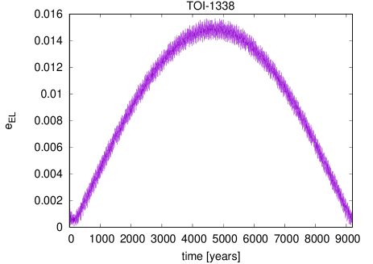
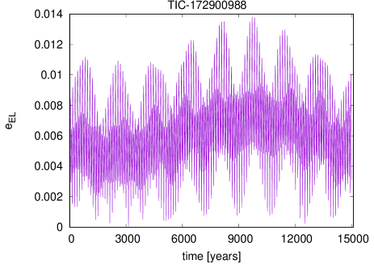
3.2 النتائج
3.3 TOI-1338b
لم تظهر المحاكاة العددية لنظام TOI-1338 أي علامة على عدم الاستقرار للكوكب الافتراضي ذي الكتلة الأرضية على كامل مدى المنطقة القابلة للسكن (). وخلال التجارب العددية راقبنا نصف المحور الأكبر وشذوذ الكوكب الشبيه بالأرض. وكان نصف المحور الأكبر شبه ثابت. وكان ذلك صحيحا حتى عندما رُفعت كتلة TOI-1338b إلى . ولم يظهر الشذوذ أي زيادة مهمة على كامل طول المنطقة القابلة للسكن. وسجلت قيم أعلى كلما اقتربنا من الحافة الداخلية للمنطقة القابلة للسكن. ويمثل الشكل 2 تمثيلا بيانيا للنتائج أعلاه. إذ يبين أكبر نصف محور أكبر وأكبر شذوذ سُجلا لقيم مختلفة من الشذوذ المتوسط للكوكب الشبيه بالأرض عند كل موضع داخل المنطقة القابلة للسكن وضع فيه ذلك الجسم.
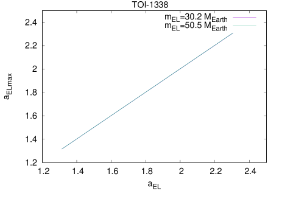
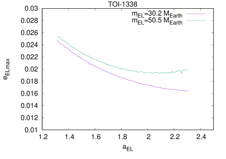
3.4 TIC-172900988
كانت نتائج TIC-172900988 مشابهة لنتائج TOI-1338. ففي أي من الحلول الستة المكاملة عدديا لم يكن الكوكب الافتراضي غير مستقر في أي من المواضع التي وضع فيها ابتداء داخل المنطقة القابلة للسكن (). وكان نصف المحور الأكبر شبه ثابت، بينما كانت قيم الشذوذ العظمى المسجلة صغيرة جدا. وفيما يتعلق بالأخيرة، وعلى غرار ما لوحظ في TOI-1338، وجدت قيم أعلى كلما اقتربنا من الحد الداخلي للمنطقة القابلة للسكن، ولكن ليس بالحدة نفسها كما في ذلك النظام. ويمثل الشكل 3 تمثيلا بيانيا للنتائج أعلاه.
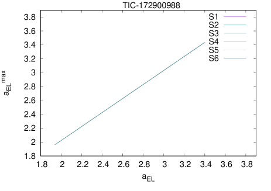
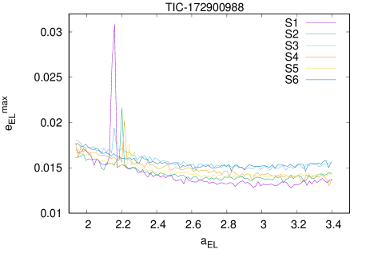
4 المناطق القابلة للسكن المستندة إلى الديناميات
تعد المناطق القابلة للسكن المستندة إلى الديناميات (DIHZs) أداة مفيدة في البحث عن كواكب قابلة للسكن. وتبنى DIHZs بطريقة تأخذ في الحسبان حقيقة أن العناصر المدارية للكواكب في الأنظمة الثنائية تتغير بمرور الزمن بسبب التفاعلات الجذبية بين جميع الأجسام. وينطوي هذا التغير المعتمد على الزمن في مدار الكوكب على تغير في الإشعاع الوارد. وقد تستجيب كواكب مختلفة بطرائق مختلفة لذلك التغير المعتمد على الزمن في التشمس، أي إنها قد تظهر درجات مختلفة من «العطالة المناخية». وهذا ما تتعامل معه DIHZs أيضا.
قُدمت المناطق القابلة للسكن المستندة إلى الديناميات واستخدمت أول مرة في دراسة قابلية السكن للكواكب حول نجم واحد في الأنظمة الثنائية (Eggl et al., 2012; Eggl et al., 2013a; Georgakarakos & Eggl, 2019). ولاحقا، استخدمت DIHZs في أنظمة نجمية مفردة ذات كواكب عملاقة (Georgakarakos et al., 2018). وأخيرا، طبقت المنهجية على أنظمة كوكبية محيطة بثنائي نجمي (Eggl, 2018; Eggl et al., 2020; Georgakarakos et al., 2021). وهناك ثلاثة أنواع من DIHZs: المنطقة القابلة للسكن دائما (PHZ)، حيث يبقى الكوكب دوما ضمن حدود التشمس القابل للسكن؛ والمنطقة القابلة للسكن المتوسطة (AHZ)، حيث يكون التشمس في المتوسط ضمن القيم القابلة للسكن؛ وأخيرا المنطقة القابلة للسكن الممتدة (EHZ)، وهي الإقليم الذي يبقى فيه الكوكب في المتوسط زائد أو ناقص انحراف معياري واحد ضمن حدود التشمس القابل للسكن. وتعد PHZ مثالية للكواكب ذات العطالة المناخية المنخفضة. ومن ناحية أخرى، تفترض AHZ قدرات تخميد غير محدودة في غلاف الكوكب الجوي، بينما تقع EHZ بين المنطقتين الأخريين. ويمكن العثور على مزيد من التفاصيل عن الأنواع الثلاثة للمناطق في مواضع أخرى (مثلا Georgakarakos et al., 2018).
ننتقل الآن إلى حساب المناطق القابلة للسكن للنظامين المحيطين بثنائي نجمي من TESS قيد البحث. وللقيام بذلك، نستخدم المنهجية الموصوفة تفصيلا في Georgakarakos et al. (2021). وباستخدام المعادلات المشتقة في ذلك العمل، نحصل على حدود المنطقة القابلة للسكن الكلاسيكية (CHZ) والمناطق القابلة للسكن المستندة إلى الديناميات للحلين الخاصين بـ TOI-1338 والحلول الستة الخاصة بـ TIC-172900988. وبالنسبة إلى الأنظمة المكونة من نجم وكوكب على مدار دائري ثابت، تعطى حدود CHZ بالعلاقة
| (6) |
حيث إن هي مسافة الكوكب إلى النجم المضيف بالوحدات الفلكية، و هي اللمعانية النجمية باللمعانيات الشمسية. أما و فهما قيمتا التشمس الفعال (Kasting et al., 1993)، اللتان تقابلان عدد الثوابت الشمسية المطلوبة لإطلاق عملية احتباس حراري جامحة تبخر محيطات السطح (الرمز السفلي )، أو حالة كرة ثلجية تجمد المحيطات على نطاق عالمي (الرمز السفلي ). ويمكن حسابهما من التعبيرات الواردة في (Kopparapu et al., 2014). وبالنسبة إلى نجم ثنائي، نستخدم النسخة المعدلة الآتية من المعادلة (6) لحساب حدود CHZ (Eggl, 2018; Georgakarakos et al., 2021):
| (7) |
حيث تشير الفهارس 1 و2 إلى النجمين. ويمكن العثور على قيم جميع المناطق في الجدول 1. ولحساب حدود DIHZs استخدمنا قيم الشذوذ الأعظم والشذوذ التربيعي المتوسط التي حصلنا عليها من محاكاة استقرار الكوكب الشبيه بالأرض.
كما رأينا في القسم السابق، فإن كامل المنطقة الكلاسيكية القابلة للسكن مستقرة ديناميكيا في الأساس لكل من TOI-1338 وTIC-172900988. وبسبب خصائص النظامين (الكتل والمعلمات المدارية)، لا يكتسب الكوكب الشبيه بالأرض شذوذا مداريا مهما. وتنعكس هذه الحقيقة في قيم DIHZs، ولا سيما في قيم حدود PHZ التي تعتمد على الشذوذ الأعظم. وبالنسبة إلى أي من حلّي TOI-1338 اللذين بحثناهما، يبلغ طول PHZ نحو من طول المنطقة الكلاسيكية القابلة للسكن. وهذا يعني أن كوكبا يحتمل أن يكون قابلا للسكن وذا عطالة مناخية منخفضة يمكن أن يبقى قابلا للسكن في معظم المنطقة الكلاسيكية القابلة للسكن. وإذا كان لدى الكوكب بعض قدرات التخميد المحدودة عند حدوث تغير في التشمس الوارد، فيمكن لذلك الكوكب أن يحتفظ بالماء السائل على سطحه في جزء أكبر حتى من CHZ (نحو كما تشير حدود EHZ).
يظهر TIC-172900988 أيضا قدرة جيدة جدا على استضافة عوالم قابلة للسكن. ومن بين الحلول الستة للمدارات والمعلمات المقترحة لذلك النظام والمتسقة مع الأرصاد، نلاحظ تنوعا أكبر فيما يتعلق بإمكان وجود كواكب قابلة للسكن. توفر الحلول 1 و4 أصغر PHZ: إذ يمكن أن تكون و على الترتيب من CHZ ملائمة لكوكب لدعم الماء السائل على سطحه، أيا كان تطوره المداري. وفي الطرف الآخر، لدينا الحلان 5 و6 اللذان يوفران أوسع مناطق PHZ (). ويرجع ذلك إلى أن هذين الحلين يعطيان أصغر شذوذين للكوكب TIC-172900988b. وتعني الشذوذات الصغيرة للكوكب العملاق أنه لا يتوقع لكوكب أرضي على مدار دائري ابتدائيا أن يبلغ قيما عالية من شذوذه المداري (انظر مثلا Georgakarakos et al., 2016). ويظهر ذلك في الرسم السفلي من الشكل 3. وتعطي الحلول 2 و3 أطوال PHZ تقع بين مجموعتي الحلول الأخريين. وأخيرا، إذا كان لعالمنا المحتمل القابل للسكن قدرة متوسطة على تخميد تغيرات الإشعاع الوارد، فيمكن للكوكب أن يقيم في جزء أكبر حتى من CHZ، يتراوح من إلى .
يمثل الشكل 4 تمثيلا بيانيا لـ DIHZs في النظامين الثنائيين. وفي هذه الرسوم سمحنا للشذوذ للكوكبين TOI-1338b وTIC-172900988b بأن يتغير حتى قيم أعلى بكثير، بحيث يستطيع القارئ أن يتصور على نحو أفضل أثر تلك الكمية في طول المناطق المختلفة القابلة للسكن.
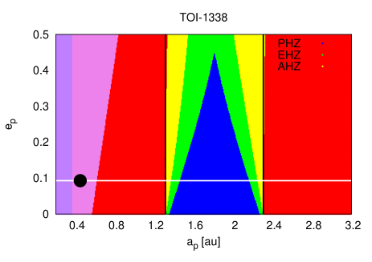
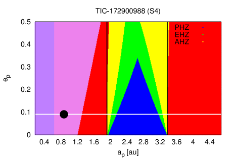
| System | CHZ (au) | PHZ (au) | EHZ (au) | AHZ (au) |
|---|---|---|---|---|
| TOI-1338 () | 1.31 - 2.31 | 1.46 - 2.16 (70%) | 1.37 - 2.25 (88%) | 1.31 - 2.31 (100%) |
| TOI-1338 () | 1.31 - 2.31 | 1.45 - 2.17 (72%) | 1.37 - 2.25 (88%) | 1.32 - 2.30 (98%) |
| TIC-172900988 (S1) | 1.94 - 3.40 | 2.22 - 3.21 (68%) | 2.03 - 3.30 (87%) | 1.94 - 3.40 (100%) |
| TIC-172900988 (S2) | 1.94 - 3.40 | 2.11 - 3.25 (78%) | 2.01 - 3.32 (90%) | 1.94 - 3.40 (100%) |
| TIC-172900988 (S3) | 1.94 - 3.40 | 2.13 - 3.23 (75%) | 2.02 - 3.31 (88%) | 1.94 - 3.40 (100%) |
| TIC-172900988 (S4) | 1.94 - 3.40 | 2.16 - 3.19 (71%) | 2.04 - 3.29 (86%) | 1.94 - 3.40 (100%) |
| TIC-172900988 (S5) | 1.94 - 3.40 | 2.02 - 3.33 (90%) | 1.97 - 3.36 (95%) | 1.94 - 3.40 (100%) |
| TIC-172900988 (S6) | 1.94 - 3.40 | 2.02 - 3.33 (90%) | 1.97 - 3.36 (95%) | 1.94 - 3.39 (100%) |
5 قابلية كشف الكواكب الشبيهة بالأرض
رأينا في القسم السابق أن المنطقتين القابلتين للسكن لكل من TOI-1338 وTIC-172900988 جيدتان بما يكفي لدعم كوكب يحوي ماء سائلا على سطحه. غير أن سؤالا مشروعا هو ما إذا كان يمكن كشف مثل هذا الكوكب ضمن مدى المنطقة القابلة للسكن. وفي هذا القسم نقدم بعض التقديرات للإجابة عن السؤال أعلاه.
اقتُرح أن الكواكب في الثنائيات قد تكون أسهل كشفا مقارنة بأنظمة النجم المفرد، لأن التفاعلات الجذبية بين الكوكب والنجم الثاني يمكن أن تعزز إشارات السرعة الشعاعية والقياس الفلكي (مثلا Eggl et al., 2013b). واتباعا لـ Eggl et al. (2013b) ومع تعديل نصف سعة RV تبعا لذلك لنظام محيط بثنائي نجمي (Martin et al., 2019)، فإن القيمة العظمى للسرعة الشعاعية المتحققة هي
| (8) |
حيث إن هو الميل بالنسبة إلى مستوى السماء. ويشير الرمز السفلي EL إلى الكوكب الشبيه بالأرض.
نقيم الآن المعادلة (8) لنظام TOI-1338 على مدى منطقته القابلة للسكن. وبالنسبة إلى استخدمنا القيم المكتسبة خلال تجربة الاستقرار التي أجريناها. كما نفترض أن . وبالنسبة إلى كلا حلّي TOI-1338b، لا تتجاوز القيمة عند الحافة الداخلية للمنطقة القابلة للسكن. وكلما اقتربنا من الطرف الآخر للمنطقة القابلة للسكن تصبح تلك القيمة أصغر. وبطبيعة الحال، فهذا أمر متوقع. فالأرض عند مسافة 1 وحدة فلكية من الشمس لها نصف سعة RV قدره . ومن ناحية أخرى، لدى TOI-1338 كتلة نجمية كلية مقدارها ، وتبدأ المنطقة القابلة للسكن حول 1.3 وحدة فلكية. وكما يظهر من المعادلة (8)، فإن زيادة الكتل النجمية ونصف المحور الأكبر للكوكب الشبيه بالأرض ستؤدي إلى قيم أصغر لـ . وعلاوة على ذلك، كما رأينا في الشكل 2، يبقى الشذوذ الأعظم للكوكب الأرضي صغيرا جدا في جميع أنحاء المنطقة القابلة للسكن، ولذلك فهذا سبب آخر يجعل ، وهي دالة متزايدة في ، ذات قيم منخفضة.
عموما، قد لا تكون القيمة العظمى للسرعة الشعاعية أفضل مؤشر لنا من أجل تقييم قابلية كشف كوكب محتملة عند مدى معين. ويرجع ذلك إلى أنه ليس مؤكدا أننا سنتمكن من رصد الكوكب عندما يكون قد بلغ شذوذه المداري الأقصى أو قيمة قريبة منه. وتبعا لنظامنا، قد يظهر الكوكب فترة طويلة الأمد جدا مع سعة شذوذ مهمة. ومن ثم قد يكون من الأنسب استخدام مؤشرات مختلفة، مثل الجذر التربيعي لمتوسط المربعات (rms) لقياسات السرعة الشعاعية. ويأخذ التعبير الصيغة الآتية (Eggl et al., 2013b):
| (9) |
بالنسبة إلى TOI-1338، تكون أقل بقليل من عند الحافة الداخلية للمنطقة القابلة للسكن، ثم تنخفض كلما اتجهنا نحو الحد الخارجي للمنطقة القابلة للسكن. ويقدم الشكل 5 (اللوحتان العلويتان) تطور و داخل المنطقة القابلة للسكن لحل الملاءمة الأفضل لـ TOI-1338.
إذا نظرنا الآن إلى القياس الفلكي باعتباره طريقة الكشف، فهناك تعبيرات مشابهة لطريقة RV تتعلق بالسعة الفلكية العظمى وrms الفلكي. وتعطى هذه بالعلاقات (Eggl et al., 2013b):
| (10) |
و
| (11) | |||||
حيث إن هي المسافة (بالوحدات الفلكية) بين الراصد والنظام المرصود، و هو الشذوذ التربيعي المتوسط على الشذوذ المتوسط وحجة الحضيض. وينبغي للقارئ أن يلاحظ هنا أن مستقل عن الميل .
بالنسبة إلى TOI-1338، فإن الإشارة الفلكية العظمى لكوكب ذي كتلة أرضية في المنطقة القابلة للسكن للنظام صغيرة جدا، أي أصغر من 0.014 . والإشارة المتوسطة أدنى من ذلك بمرتبة مقدار واحدة. وتؤكد اللوحتان السفليتان من الشكل 5 ذلك.
يعرض TIC-172900988 أيضا إشارات كشف صغيرة في منطقته القابلة للسكن. فإشارة السرعة الشعاعية أقل من نظيراتها في TOI-1338، بينما مؤشرات القياس الفلكي أكبر. والكتلة الكلية للثنائية النجمية أكبر بنحو الضعف من كتلة TOI-1338. إضافة إلى ذلك، تقع الحافة الداخلية للمنطقة القابلة للسكن أبعد بنحو من الحد الداخلي للمنطقة القابلة للسكن في TOI-1338. وأخيرا، كما ذكر سابقا، فإن الشذوذ الأعظم الذي يكتسبه الكوكب الأرضي الافتراضي عبر المنطقة القابلة للسكن أصغر في نظام TIC-172900988. ومن ناحية أخرى، فإن الإشارات الفلكية لـ TOI-1338 أصغر، ويرجع ذلك أساسا إلى أن مسافته عنا هي ، وهي أكبر بكثير من الخاصة بـ TIC-172900988. ويمثل الشكل 6 تمثيلا بيانيا لإشارات السرعة الشعاعية والقياس الفلكي لـ TIC-172900988.
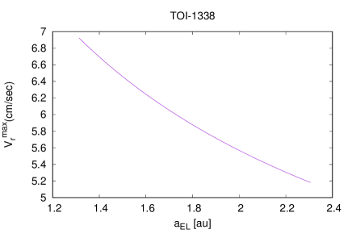
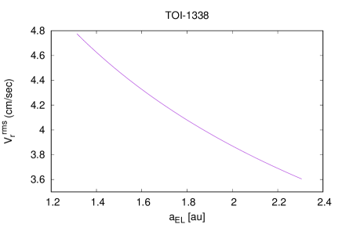
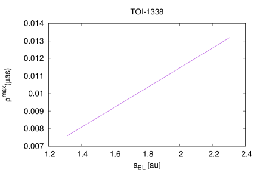
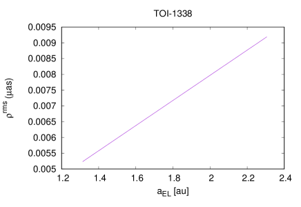
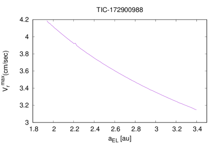
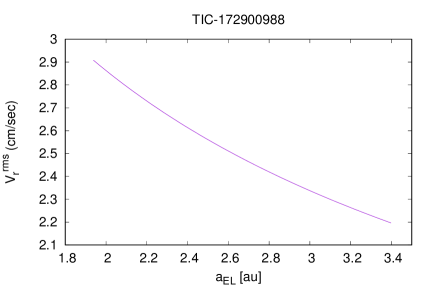
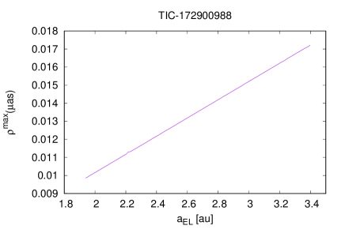
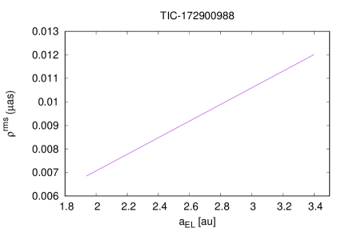
6 ملخص ومناقشة
استكشفنا الديناميات وقابلية السكن المحتملة للنظامين المحيطين بثنائي نجمي اللذين اكتشفا باستخدام TESS حتى الآن. يستضيف النظام الثنائي TOI-1338 كوكبا تبلغ كتلته نحو ضعف كتلة نبتون، بينما لدى TIC-170900988 كوكب كتلته نحو ثلاث كتل مشتري. وقد استكشفنا المناطق القابلة للسكن في كلا النظامين من حيث استقرارها الديناميكي. ووضعنا كوكبا افتراضيا بكتلة أرضية على امتداد المنطقتين القابلتين للسكن للتحقق مما إذا كان مداره مستقرا ديناميكيا، وأجرينا عددا من المحاكاة العددية على مدى زمني كاف. ومن نظريات تشكل الكواكب، من الممكن وجود هذا النوع من الأنظمة (مثلا Barbosa et al., 2020, 2021). ووجدنا أنه بالنسبة إلى الحلول المدارية المختلفة لـ TOI-1338 وTIC-172900988 التي بحثناها، أظهر مدار الكوكب ذي الكتلة الأرضية تغيرات طفيفة في نصف المحور الأكبر وبعض التغيرات الصغيرة في الشذوذ. ومن ثم تبين أن جميع التهيئات مستقرة. وبما أن المنطقة القابلة للسكن في النظام وُجدت مستقرة ديناميكيا، فقد حسبنا المناطق القابلة للسكن المستندة إلى الديناميات للحصول على تقييم للخصائص النوعية للمنطقة القابلة للسكن. ووجدنا في جميع الحالات أن المنطقة القابلة للسكن دائما تغطي جزءا كبيرا من المنطقة الكلاسيكية القابلة للسكن. وفي بعض الحالات بلغ ذلك الجزء نحو من الأخيرة، مما يعني أن النظام الثنائي مناسب لاستضافة كواكب أرضية ذات عطالة مناخية منخفضة. وقد عثر على هذا النوع من النتائج في أنظمة أخرى محيطة بثنائي نجمي، مثل Kepler-38 أو Kepler-64 على سبيل المثال (Georgakarakos et al., 2021).
بعد ذلك، تحققنا من مقدار إشارة الكشف المتوقعة لكوكب ذي كتلة أرضية في المنطقة القابلة للسكن للثنائيتين. وباستخدام طريقتي الكشف بالسرعة الشعاعية والقياس الفلكي، أجرينا بعض التقديرات التي تغطي كامل مدى المنطقة القابلة للسكن. وأظهرت النتائج أن مثل هذا الاكتشاف غير ممكن في ضوء مرافق الكشف الحالية لدينا، ولا سيما إذا حاولنا استخدام القياس الفلكي لكشف الكوكب.
شكر وتقدير
أود أن أشكر Siegfried Eggl الذي قدم الشيفرة التي استخدمت في تجاربنا العددية. وأود أيضا أن أشكر المحكم O.C. Winter على تعليقاته التي ساعدتني على تحسين المخطوطة.
إتاحة البيانات
البيانات المعروضة والمناقشة في هذه الورقة متاحة بناء على طلب معقول إلى المؤلف المراسل.
References
- Barbosa et al. (2020) Barbosa G. O., Winter O. C., Amarante A., Izidoro A., Domingos R. C., Macau E. E. N., 2020, MNRAS, 494, 1045
- Barbosa et al. (2021) Barbosa G. O., Winter O. C., Amarante A., Macau E. E. N., 2021, MNRAS, 504, 6144
- Bonavita & Desidera (2020) Bonavita M., Desidera S., 2020, Galaxies, 8, 16
- Borucki et al. (2010) Borucki W. J., et al., 2010, Science, 327, 977
- Chavez et al. (2015) Chavez C. E., Georgakarakos N., Prodan S., Reyes-Ruiz M., Aceves H., Betancourt F., Perez-Tijerina E., 2015, MNRAS, 446, 1283
- Eggl (2018) Eggl S., 2018, Habitability of Planets in Binary Star Systems. p. 61, doi:10.1007/978-3-319-55333-7_61
- Eggl & Dvorak (2010) Eggl S., Dvorak R., 2010, An Introduction to Common Numerical Integration Codes Used in Dynamical Astronomy. pp 431–480, doi:10.1007/978-3-642-04458-8_9
- Eggl et al. (2012) Eggl S., Pilat-Lohinger E., Georgakarakos N., Gyergyovits M., Funk B., 2012, ApJ, 752, 74
- Eggl et al. (2013a) Eggl S., Pilat-Lohinger E., Funk B., Georgakarakos N., Haghighipour N., 2013a, MNRAS, 428, 3104
- Eggl et al. (2013b) Eggl S., Haghighipour N., Pilat-Lohinger E., 2013b, ApJ, 764, 130
- Eggl et al. (2020) Eggl S., Georgakarakos N., Pilat-Lohinger E., 2020, Galaxies, 8, 65
- Georgakarakos (2013) Georgakarakos N., 2013, New Astron., 23, 41
- Georgakarakos & Eggl (2015) Georgakarakos N., Eggl S., 2015, ApJ, 802, 94
- Georgakarakos & Eggl (2019) Georgakarakos N., Eggl S., 2019, MNRAS, 487, L58
- Georgakarakos et al. (2016) Georgakarakos N., Dobbs-Dixon I., Way M. J., 2016, MNRAS, 461, 1512
- Georgakarakos et al. (2018) Georgakarakos N., Eggl S., Dobbs-Dixon I., 2018, ApJ, 856, 155
- Georgakarakos et al. (2021) Georgakarakos N., Eggl S., Dobbs-Dixon I., 2021, Frontiers in Astronomy and Space Sciences, 8, 44
- Gilbert et al. (2020) Gilbert E. A., et al., 2020, AJ, 160, 116
- Gillon et al. (2016) Gillon M., et al., 2016, Nature, 533, 221
- Holman & Wiegert (1999) Holman M. J., Wiegert P. A., 1999, AJ, 117, 621
- Kasting et al. (1993) Kasting J. F., Whitmire D. P., Reynolds R. T., 1993, Icarus, 101, 108
- Koch et al. (2010) Koch D. G., et al., 2010, ApJ, 713, L79
- Kopparapu et al. (2014) Kopparapu R. K., Ramirez R. M., SchottelKotte J., Kasting J. F., Domagal-Goldman S., Eymet V., 2014, ApJ, 787, L29
- Kostov et al. (2020) Kostov V. B., et al., 2020, AJ, 159, 253
- Kostov et al. (2021) Kostov V. B., et al., 2021, arXiv e-prints, p. arXiv:2105.08614
- Martin et al. (2019) Martin D. V., et al., 2019, A&A, 624, A68
- Marzari & Thebault (2019) Marzari F., Thebault P., 2019, Galaxies, 7, 84
- Petrovich (2015) Petrovich C., 2015, ApJ, 808, 120
- Popova & Shevchenko (2016) Popova E. A., Shevchenko I. I., 2016, Astronomy Letters, 42, 474
- Rodriguez et al. (2020) Rodriguez J. E., et al., 2020, AJ, 160, 117
- Socia et al. (2020) Socia Q. J., et al., 2020, AJ, 159, 94
- Welsh et al. (2012) Welsh W. F., et al., 2012, Nature, 481, 475
Appendix A الجداول
| Stellar binary | |||||
|---|---|---|---|---|---|
| Planet | |||||
| Stellar binary | |||||
| Solution 1 | |||||
| Solution 2 | |||||
| Solution 3 | |||||
| Solution 4 | |||||
| Solution 5 | |||||
| Solution 6 | |||||
| Planet | |||||
| Solution 1 | |||||
| Solution 2 | |||||
| Solution 3 | |||||
| Solution 4 | |||||
| Solution 5 | |||||
| Solution 6 | |||||